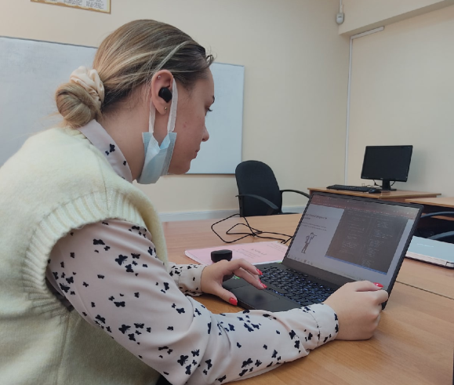

Крох Арина
Позвольте познакомить вас с одной прекрасной девушкой. Нет, это не Моника Белуччи, однако спасибо за сравнение. Это Крох Арина! Умница, красавица, всем она очень нравится. Родители гордятся, соперники боятся, а друзья обожают и души в ней не чают!
Ладно, давайте по порядку...
Крох Арина Николаевна
18 лет
Каменец (поставите не туда ударение, и Арина Николаевна вас укусит)
Знак зодиака: рак
Любимый фильм: “Драйв” с Районом Гослингом
Любимая еда: пицца
Любимый напиток: чай, который пьёт Полина
Увлечения Арины
Арина очень любит печь. Она часто скидывает мне фотографии своих кулинарных шедевров. А теперь спросите, сколько из них мне удалось попробовать)0)))
Также Арина любит верстать и слушать подкасты. Посмотрите, какая серьёзная!
И т. д.... всё рассказывать не буду!
Люблю Арину Крох сильнее,
когда она превращается в Орену Кроге!
Как я вижу Арину,
когда она пишет конспект у Белодеда
(наведите на нос)
Всех цалую!
P.S.Pugach